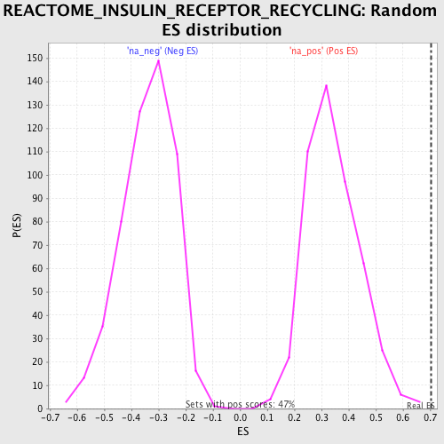

| | | Dataset | GSEA_Cushing_prerank_FC |
| Phenotype | NoPhenotypeAvailable |
| Upregulated in class | na_pos |
| GeneSet | REACTOME_INSULIN_RECEPTOR_RECYCLING |
| Enrichment Score (ES) | 0.70411605 |
| Normalized Enrichment Score (NES) | 2.0546377 |
| Nominal p-value | 0.0 |
| FDR q-value | 0.0018832057 |
| FWER p-Value | 0.021 |
Table: GSEA Results Summary
 Fig 1: Enrichment plot: REACTOME_INSULIN_RECEPTOR_RECYCLING
Fig 1: Enrichment plot: REACTOME_INSULIN_RECEPTOR_RECYCLING
Profile of the Running ES Score & Positions of GeneSet Members on the Rank Ordered List

Fig 2: REACTOME_INSULIN_RECEPTOR_RECYCLING: Random ES distribution
Gene set null distribution of ES for REACTOME_INSULIN_RECEPTOR_RECYCLING